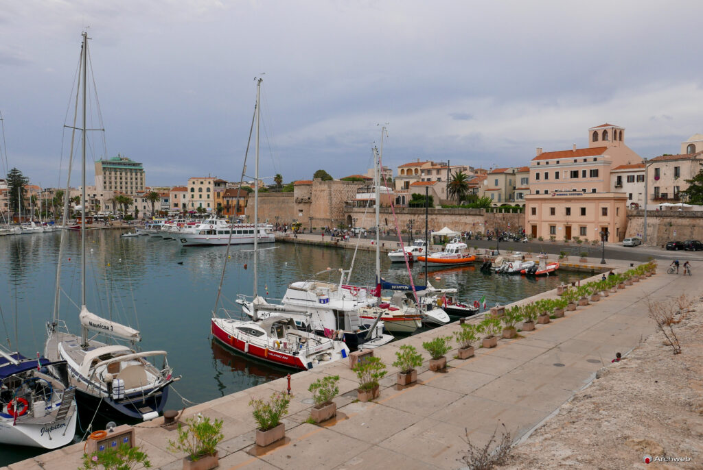
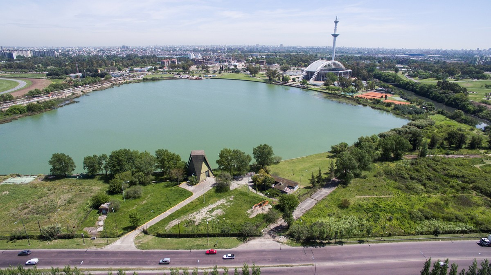

faro del horizonte
Un faro historico ubicado frente al mar, con las mejores vistas y experiencias únicas.
- Visita guiada
- Fotos en la cima del faro
- Espacios para comer.
- Museo del faro
Se recomienda visitar porque ofrece hermosas vistas del mar y permite conocer un lugar histórico de la zona. Además, se pueden realizar visitas guiadas, sacar fotografías desde la cima y conocer el museo del faro.
 UBICACION Faro del Cabo Aurora, Costa de Mar Serena, Argentina
UBICACION Faro del Cabo Aurora, Costa de Mar Serena, Argentina
Puerto Viejo
Zona historica de la ciudad, con restaurantes,ferias y artesanos. hermoso para recorrer y disfrutar de la cultura local.
- Recorrido por la costa y sus calles empedradas
- Compra de artesanías locales
- Disfruta de la gastronomía típica
Se recomienda visitar porque es un lugar lleno de historia y cultura, donde se pueden recorrer sus calles empedradas, comprar artesanías locales y disfrutar de la gastronomía típica de la región.

UBICACION Centro de Aurora, Calle del Puerto, Argentina
Reserva Laguna Azul
Una hermosa reserva natural con lagunas y senderos para disfrutar de la naturaleza. Ideal para actividades al aire libre y contemplación de la fauna local.
- Senderos para caminatas
- Avistamiento de aves y otros animales
- Pícnic en áreas designadas
Se recomienda visitar porque es un lugar perfecto para los amantes de la naturaleza, donde se pueden realizar caminatas por senderos, observar aves y otros animales en su hábitat natural, y disfrutar de un pícnic en áreas designadas.

UBICACION Reserva Laguna Azul, ruta Nacional 40, Argentina